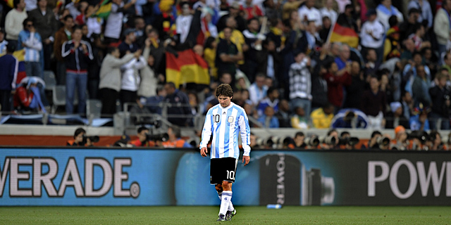
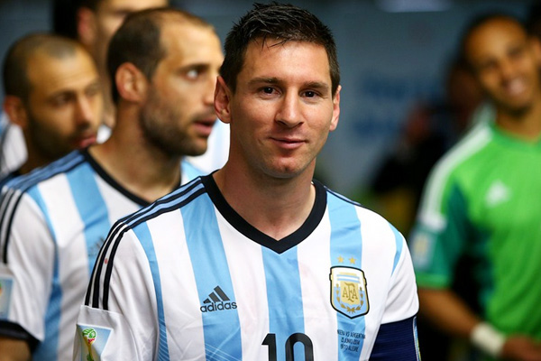
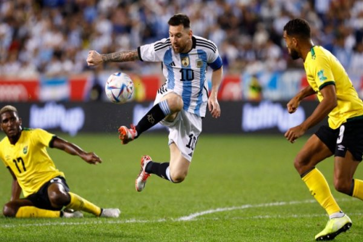

Al ser convocado para el Mundial de Alemania 2006, Messi se convirtió en el jugador argentino más joven en jugar un mundial.Llegó a dicho certamen después de superar una reciente lesión que arrastraba desde marzo. Debutó en la Copa del Mundo en el segundo partido de Argentina, ante Serbia y Montenegro. Ingresó al campo de juego en el minuto 73 con un 3-0 a favor de Argentina. El equipo, por medio de Carlos Tévez, amplió el resultado y Messi dio una asistencia de gol a Hernán Crespo cinco minutos después de haber ingresado y marcó el 6-0 final en el 88; lo que lo convirtió en el sexto jugador más joven en anotar un gol en la historia de los mundiales.Fue titular en el tercer partido del grupo, contra Países Bajos (0-0)3 y en octavos de final ante México, entró en el minuto 84 y jugó toda la prórroga en la que venció Argentina por 2-1.4 No participó, sin embargo, en el partido por cuartos de final frente a Alemania en el que Argentina fue eliminada en los penales.Buena parte tanto de la crítica especializada como de la opinión general criticó a Pekerman por esa decisión.
Tras la renuncia de Pekerman después de la eliminación en el Mundial, Alfio Basile tomó el mando de la selección argentina.Basile continuó convocando a Messi. El 5 de junio de 2007, en un amistoso contra Argelia, Messi convirtió su primer doblete con la selección. En la Copa América de Venezuela 2007, su primer partido fue contra Estados Unidos, donde Argentina goleó 4-1. Dio una asistencia de gol a Crespo y fue sustituido por Tévez a los 79 minutos.Ante Colombia provocó el penalti del 1-1 y participó en el segundo gol de Riquelme. El marcador acabó 4-2 a favor de Argentina.En el tercer encuentro, esta vez contra Paraguay, Messi entró al campo en el minuto 64 en lugar de Esteban Cambiasso. El encuentro finalizó 1-0 a favor de Argentina con gol de Javier Mascherano. En los cuartos de final, Argentina goleó a Perú por 4-0.12 Allí, Messi marcó el segundo gol del partido tras pase de Riquelme. En las semifinales, marcó un gol de vaselina ante México en la victoria argentina por 3-0.Basile expresó que "solo los genios son capaces de hacer un gol como el que hizo Messi. Había que cerrar el estadio".Sin embargo, pese a su gran desempeño en todo el torneo, Argentina fue vencida por Brasil en la final por 3-0.
El 19 de mayo, el nuevo técnico argentino, Diego Maradona, incluyó a Messi en la lista de los 23 seleccionados para jugar el Mundial de Sudáfrica 2010.16 Messi llegó con una gran presión, debido a que se lo consideraba el sucesor de Maradona y su campaña en el Barcelona lo perfilaba para ser la gran figura del mundial. El primer partido de la fase de grupos, fue el 12 de junio contra la selección de Nigeria, donde ganaron 1-0 con gol de Gabriel Heinze, y Messi jugó los 90 minutos.En el segundo partido, contra la selección de Corea del Sur, Argentina ganó 4-1 y Messi tuvo una destacable actuación, a pesar de no anotar goles.El tercer encuentro fue contra la selección de Grecia, donde Argentina ganó 2-0 con goles de Demichelis y Martín Palermo. En este partido Messi fue el Jugador Budweiser del partido. En los octavos de final fue nuevamente titular. Argentina venció 3-1 a selección de México.En los cuartos de final, la selección argentina fue eliminada tras perder 4-0 contra Alemania.
El 1 de julio de 2011, Messi jugó el primer partido de la Copa América de Argentina 2011, celebrada en Argentina contra Bolivia. El partido acabó 1-1, y Messi fue elegido el mejor jugador del partido.Tras el empate contra Colombia, Messi recibió grandes críticas por parte de los hinchas argentinos, que le reclamaban que jugara como lo hacía en el Barcelona. Messi apagó las críticas al ser el autor de dos asistencias en el partido contra Costa Rica, en el que Argentina ganó por 3-0 con dos goles de Sergio Agüero y otro de Di María y de esa forma, clasificaba a la segunda fase. Messi fue elegido nuevamente mejor jugador del partido. En los cuartos de final, Uruguay se impuso ante Argentina en el minuto 5, con gol de Pérez, pero Messi asistió a Gonzalo Higuaín, que marcó el gol del empate. A pesar del esfuerzo del equipo argentino, Uruguay ganó en los penaltis por 4-5. A pesar de no convertir goles en la competición, Messi, con tres asistencias, se situó en lo más alto de la tabla de asistidores junto con Paulo Henrique Ganso.Llovieron críticas sobre todo el equipo argentino tras la derrota ante la selección uruguaya, que fue además, el último partido de Sergio Batista al ser despedido como entrenador.Hasta ese momento, los números de Messi en la selección mayor eran 61 partidos jugados con 17 goles.
El 15 de junio, Messi hizo su debut en el Mundial de Brasil 2014 en un partido contra Bosnia-Herzegovina y anotó el segundo gol de Argentina tras una devolución en una pared con Gonzalo Higuaín, con un pase de tacón, donde dribló a dos jugadores de Bosnia-Herzegovina y tiró al arco con la pierna izquierda.Gracias a su buena actuación, ganó el premio a mejor jugador del partido.El 21 de junio, jugó su segundo partido, donde se enfrentó a la selección de Irán y anotó su segundo gol del torneo en el minuto 91 de juego.Marcó con un tiro de larga distancia fuera del área grande, al segundo palo del arquero, ante una defensa iraní muy poblada durante todo el partido. Fue elegido como el jugador del partido por segunda vez consecutiva.El 25 de junio, Argentina enfrentó a Nigeria en el último partido de la fase de grupos.El resultado final fue 3-2 favor de Argentina, Messi realizó un doblete: el primer gol en el minuto tres con un remate de zurda voleada, y el segundo en el minuto 45' de un tiro libre.Messi fue elegido jugador del partido por tercera vez.
El 1 de julio, Argentina jugó contra Suiza en un partido de octavos de final.El resultado fue de empate a 0-0 en los 90 minutos, por lo que tuvieron que acudir a los tiempos extras. El gol llegó en el minuto 118', donde Messi asistió a Di María.Messi fue elegido por cuarta vez jugador del partido.Argentina logró pasar a los cuartos de final tras ganarle 1 a 0 a la selección de Suiza. El 5 de julio, Argentina se enfrentó a Bélgica en un partido de cuartos de final El marcador final fue de 1-0 a favor de Argentina, con gol en el minuto 8, anotado por Higuaín.El 9 de julio, Argentina jugó contra Países Bajos en las semifinales, el marcador fue un empate 0-0 en los 90 minutos, por lo que hubo que recurrir a los tiempos extras y luego a la tanda de penales, donde Messi anotó el primer gol de Argentina, que ganó 4 a 2. El 13 de julio, Argentina se enfrentó con Alemania en la final. Tras un empate 0-0, se jugó un tiempo suplementario en el que Mario Götze anotó un gol en el minuto 114. Alemania fue campeón y Argentina, subcampeón.Tras ser cuatro veces consecutivas el Mejor Jugador del Partido, con cuatro goles en siete partidos y una asistencia, Messi se convirtió en el Balón de Oro del Mundial de Brasil.
El 25 de mayo de 2015, el entrenador de Argentina, Gerardo Martino, lo convocó en la lista de 23 para la Copa América de Chile 2015. El 13 de junio, en la fase de grupos contra Paraguay, anotó en el primer tiempo y puso un momentáneo 2-0 a favor de su equipo en un partido que terminó 2-2,Cuatro días más tarde, jugó 90 minutos en el segundo partido del grupo contra Uruguay, que terminó 1-0 a favor de Argentina, y fue elegido MVP del partido.En el último partido de la ronda, que finalizó 1-0 contra Jamaica, Messi llegó a los cien partidos con su selección. Es el futbolista argentino más joven en la historia en llegar a esa marca, el quinto después de Javier Zanetti, Roberto Ayala, Javier Mascherano y Diego Simeone. El 27 de junio, por los cuartos de final ante la Colombia de José Pekerman, hizo el primero de los penales con los que Argentina ganó 5-4 tras un partido empatado 0-0.Tres días más tarde, en las semifinales contra Paraguay, realizó tres asistencias en un encuentro que Argentina ganó 6 a 1. En la final contra Chile,el equipo argentino empató 0:0 en 120 minutos, para luego perder 4:1 en los penales.
Gerardo Martino convocó a Messi en la lista de 23 jugadores para la Copa América Centenario. La selección de fútbol de Argentina disputó su primer encuentro contra la selección de fútbol de Chile, pero Messi no jugó debido a un golpe que había recibido en las costillas en un partido amistoso contra la selección de fútbol de Honduras.La selección de Argentina derrotó 2 goles por 1 a la selección de Chile, con goles de Di María y Ever Banega. El 10 de junio de 2016, la selección de Argentina disputó su segundo partido contra la selección de fútbol de Panamá. Messi entró en el segundo tiempo y marcó tres goles. Argentina le ganó a Panamá por 5 tantos a 0, con goles de Messi, Nicolás Otamendi y Sergio Agüero.El 18 de junio, en el partido de cuartos de final ante Venezuela, Messi igualó a Batistuta como máximo goleador histórico de la selección de Argentina con 54 goles. El 21 de junio, en el partido de semifinal ante la selección de fútbol de Estados Unidos, tras marcar un gol de tiro libre, superó a Batistuta como máximo goleador y dio dos asistencia de gol, para un marcador final de 0 contra 4. El 26 de junio de 2016, se disputó la Final de la Copa América Centenario entre Argentina y Chile. Tras un empate 0 a 0 en 120 minutos, ganó la selección chilena por penales, 2 goles a 4,lo que propició la renuncia de Martino días más tarde.
Momentos después de la final de la Copa América Centenario, en la que había errado su tiro,Messi anunció su retiro de la selección argentina, alegando que "ya lo intentó mucho" ;Sin embargo, el 12 de agosto del mismo año, confirmó su regreso a la selección a través de un comunicado de prensa, y que también iba a participar en los partidos de Clasificatorias para la Copa Mundial de 2018.
El 1 de diciembre de 2017, se celebró el sorteo y confección de los grupos y fechas, para el Mundial de fútbol 2018 en Rusia.La selección argentina quedó como cabeza de serie en el grupo D, junto a Islandia, Croacia y Nigeria.El 29 de mayo de 2018, Argentina le ganó 4-0 a la selección de Haití en uno de los partidos preparatorios para el Mundial; Messi hizo su primer hat-trick en la Bombonera. El 26 de junio, luego de un empate 1-1 ante Islandia y una derrota 0-3 ante Croacia,Messi puso el 1-0 parcial en el último partido de la primera ronda ante Nigeria que Argentina ganó 2-1.La selección alcanzó el segundo puesto en la clasificación del grupo y pasó a octavos de final, donde se enfrentó a Francia, primera del grupo C y quedó eliminada por 4-3 el 30 de junio. Messi volvió con la selección el 22 de marzo de 2019, en un amistoso contra Venezuela en el estadio Wanda Metropolitano de Madrid, y que Argentina perdió 3 a 1.
El 21 de mayo de 2019, Messi fue incluido en la lista final de 23 jugadores de Argentina de Lionel Scaloni para la Copa América 2019.En el segundo partido de Argentina en la fase de grupos, el 19 de junio, Messi marcó el gol del empate desde el punto de penalti en el partido contra Paraguay (1-1). Tras ser criticado por los medios de comunicación por su actuación tras la victoria de Argentina sobre Venezuela (2-0) en los cuartos de final en el estadio Maracaná el 28 de junio, Messi comentó que no había sido su mejor Copa América, a la vez que criticó la mala calidad de los terrenos de juego. Tras la derrota de Argentina por 2-0 ante la anfitriona Brasil en las semifinales del 2 de julio, Messi criticó el arbitraje durante el partido,y alegó que la competición estaba "preparada" para que ganara Brasil.En el partido por el tercer puesto, disputado el 6 de julio contra Chile, Messi marcó el primer gol de Agüero de tiro libre en la victoria por 2 a 1, y ayudó a Argentina a conseguir la medalla de bronce; sin embargo, fue expulsado junto con Gary Medel en el minuto 37 de juego, tras verse envuelto en un altercado con el defensa chileno. Tras el partido, Messi se negó a recoger su medalla, y dio a entender en una entrevista posterior al partido que sus comentarios tras la semifinal provocaron su expulsión.Más tarde, Messi pidió disculpas por sus comentarios, pero fue multado con $1500 dólares y sancionado con un partido por la CONMEBOL, lo que le impidió disputar el próximo partido de Argentina de la clasificación para el Mundial.El 2 de agosto, Messi fue sancionado con tres meses de suspensión del fútbol internacional, y una multa de $50000 dólares por parte de la CONMEBOL por sus comentarios contra las decisiones del árbitro; esta prohibición le hizo perderse los partidos amistosos de Argentina contra Chile, México y Alemania en septiembre y octubre.
El 14 de junio de 2021, Messi marcó de tiro libre en el empate 1-1 contra Chile en el primer partido de grupo de Argentina en la Copa América 2021 en Brasil.Con este gol, superó la marca de Cristiano Ronaldo de 56 goles de tiro libre en su carrera y se convirtió en el futbolista en activo con más goles de tiro libre. También superó el récord de Gabriel Batistuta de 38 goles en partidos oficiales con Argentina.En el segundo partido de la fase de grupos, el 18 de junio, Messi marcó el gol de la victoria contra Uruguay (1-0), asistiendo a Guido Rodríguez en el remate de cabeza que aseguró la victoria de Argentina. El 21 de junio, Messi jugó su partido número 147 al igualar el récord de Javier Mascherano de mayor número de apariciones con Argentina en la victoria por 1-0 sobre Paraguay en su tercer partido del torneo.Una semana más tarde, batió el récord de apariciones con la camiseta de albiceleste al participar en la victoria por 4-1 contra Bolivia en el último partido de la fase de grupos de su equipo, dando una asistencia en el primer gol del Papu Gómez y marcando después él mismo otros dos.El 3 de julio, Messi dio dos asistencias y marcó de tiro libre en la victoria por 3-0 sobre Ecuador en los cuartos de final de la competición.El 6 de julio, en el empate a uno de las semifinales contra Colombia, Messi disputó su partido número ciento cincuenta con su país y dio su quinta asistencia de gol del torneo, un recorte para Lautaro Martínez, igualando su récord de nueve contribuciones de gol en un solo torneo de cinco años antes; más tarde anotó su tiro de penalti en la eventual victoria de Argentina por 3-2 en la tanda de penaltis para avanzar a su quinta final internacional. El 10 de julio, Argentina derrotó al país anfitrión, Brasil, en el Maracaná, por 1-0 en la final de la Copa América 2021, dándole a Messi su primer título internacional y el primero de Argentina desde la Copa América 1993, así como la 15 Copa América en su historia.Messi participó directamente en 9 de los 12 goles marcados por Argentina, marcando cuatro y asistiendo cinco; fue nombrado el mejor jugador del torneo por sus actuaciones. Además, fue el máximo goleador del torneo, con cuatro goles, empatado con el colombiano Luis Díaz, aunque la Bota de Oro fue para Messi por tener más asistencias.
Messi fue figura omnipresente para Argentina en su conquista del mundo. Y es que, en la cita de Qatar, el argentino dobló su cifra de goles en los mundiales: 6 tantos de 2010 a 2018, por los 7 goles (a Arabia Saudita, México, Australia, Países Bajo, Croacia y 2 a Francia) de 2022. Eso le llevó a una espectacular media de un gol por partido. Pero su impacto fue incluso allá, ya que Messi participó en 12 de los 15 de Argentina durante el campeonato, repartiendo además tres asistencias de gol. Por otro lado, con sus dos goles en la final ante Francia, el ‘10’ se convirtió en el primer jugador de la historia que marca un gol en la fase de grupos, octavos de final, cuartos de final, semifinales y final en una misma edición de la Copa del Mundo. En total, fueron 7 partidos del ‘10’ en Qatar, con 690 minutos. “Habría que guardarle un lugar para el próximo Mundial. Si son 26 da igual guardarle la '10’. No tiene ninguna cuenta pendiente si es que la tenía, que para mí nunca la tuvo. Fue un placer entrenarle. Lo que transmite no lo he visto nunca y eso está buenísimo”, señaló Lionel Scaloni, el seleccionador con el que Messi ganó el Mundial, el único gran título que le faltaba en su brillante palmarés.
